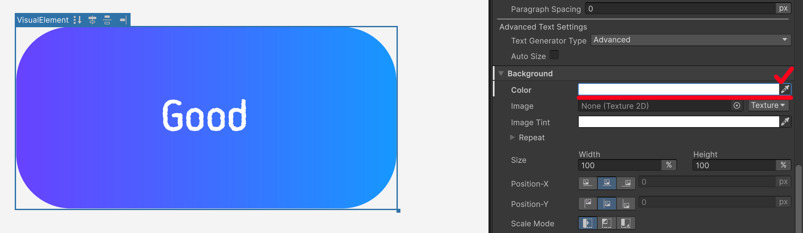
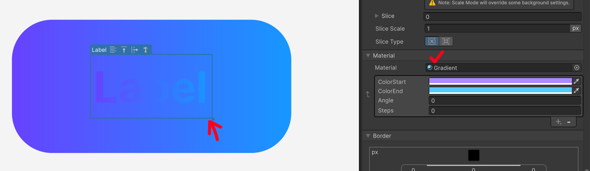
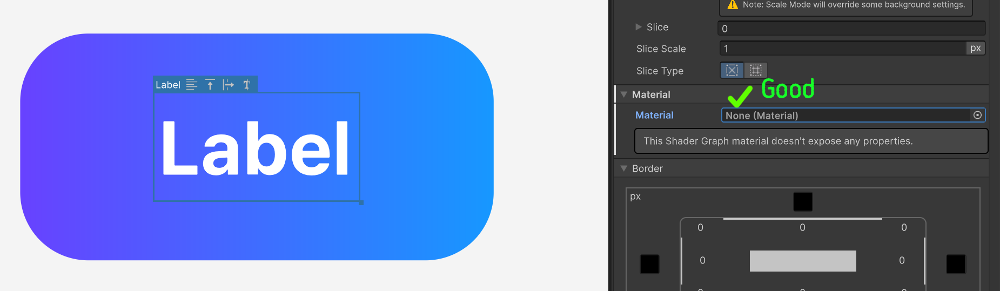
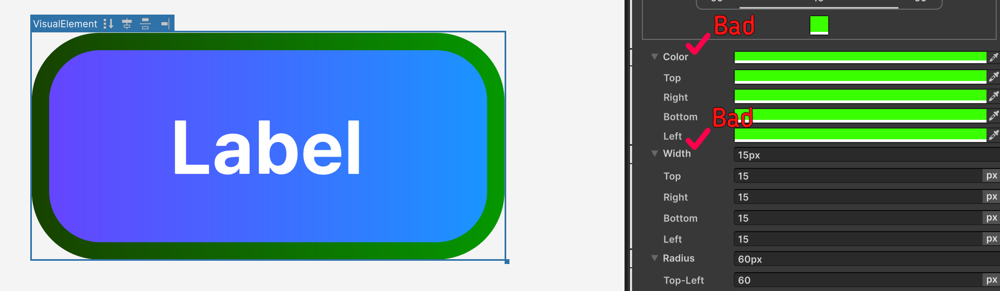
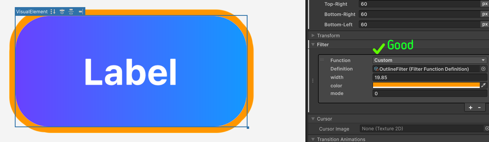

그라디언트 머티리얼
그라디언트는 필터가 아니라 -unity-material로 적용하는 커스텀 머티리얼입니다. 요소의 배경을 두 색상 사이의 그라디언트로 칠합니다.

프로퍼티
| 프로퍼티 | 설명 |
|---|---|
ColorStart |
그라디언트 시작 색상 |
ColorEnd |
그라디언트 끝 색상 |
Angle |
그라디언트 각도(도). 0이면 왼쪽 → 오른쪽 |
Steps |
색 전환의 부드러움. 값이 작을수록 두 색의 경계가 뚜렷한 칼단면에 가깝고, 150에 가까울수록 부드럽게 이어지는 그라디언트가 됩니다. 범위는 1~150이며 기본값은 150입니다. |
주의사항
1. 머티리얼만 지정해서는 표시되지 않습니다
머티리얼을 지정하는 것만으로는 그라디언트가 바로 나타나지 않습니다. 그라디언트 셰이더는 요소의 배경 위에 색을 곱해서 그리기 때문에, 색이 곱해질 밑바탕이 없으면 아무것도 보이지 않습니다.

Inspector의 Background > Background Color를 흰색 불투명(1, 1, 1, 1)으로 채워 두세요. 흰색을 밑바탕으로 두어야 그라디언트가 원래 색 그대로 표시됩니다. 배경 색의 알파가 0이면 Unity가 배경 메시 자체를 생성하지 않아 그라디언트도 그려지지 않습니다.

2. 자식 요소에 머티리얼이 상속됩니다
-unity-material은 상속되는 프로퍼티입니다. 그라디언트 머티리얼을 적용한 요소 아래에 Label이나 다른 VisualElement를 자식으로 두면, UI Builder가 자식에게도 부모의 머티리얼을 그대로 바인딩합니다. 그 결과 자식도 같은 위치에 같은 그라디언트로 덧칠되어, 마치 자식이 렌더링되지 않는 것처럼 보일 수 있습니다.
자식이 그라디언트의 영향을 받지 않게 하려면 자식 요소에 -unity-material: none;을 명시하세요.


3. 머티리얼 그라디언트는 Border를 그리지 않습니다
머티리얼로 그라디언트를 적용하면 Inspector의 Border > Color 가 의도대로 그려지지 않습니다.
그라디언트 요소에 단색의 외곽선을 넣고 싶다면 Border에 Color와 Width를 비워두고, 대신 Outline 필터를 사용하세요.

